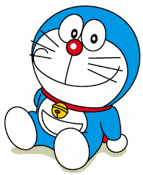

hi! I am Mayank Mane
I am professional and classied game/app developer. I can help you to make a app.

Doraemon (Japanese: Japanese pronunciation: is a Japanese manga series written and illustrated by Fujiko Fujio, the pen name of the duo Hiroshi Fujimoto and Motoo Abiko. The series has also been adapted into a successful anime series and media franchise. The story revolves around an earless robotic cat named Doraemon, who travels back in time from the 22nd century to aid a boy named Nobita Nobi ( Nobi Nobita).
The first full story in the Doraemon manga series was published in January 1970. A pre-advertisement for the manga was published in six different magazines in December 1969. A total of 1,465 stories were created in the original series, which are published by Shogakukan. It is the best-selling manga for children and one of the best-selling manga in the world, and has sold over 100 million copies as of 2015.
The volumes are collected in the Takaoka Central Library in Toyama, Japan, where Fujiko Fujio was born. Turner Broadcasting System bought the rights to the Doraemon anime series in the mid-1980s for an English-language release in the United States, but cancelled it without explanation before broadcasting any episodes. In July 2013, Voyager Japan announced the manga would be released digitally in English via the Amazon Kindle e-book service.
Awards for Doraemon include the Japan Cartoonists Association Award for excellence in 1973, the first Shogakukan Manga Award for children's manga in 1982, and the first Osamu Tezuka Culture Award in 1997. In March 2008, Japan's Foreign Ministry appointed Doraemon as the nation's first "anime ambassador." A Ministry spokesperson explained the novel decision as an attempt to help people in other countries understand Japanese anime better and to deepen their interest in Japanese culture.
The Foreign Ministry action confirms that Doraemon has come to be considered a Japanese cultural icon. In India, its Hindi, Telugu and Tamil translation has been telecasted, where the anime version is the highest-rated kids' show; winning the Best Show For Kids award twice at the Nickelodeon Kids' Choice Awards India in 2013 and 2015. In 2002 Time Asia magazine acclaimed the character as an "Asian Hero" in a special feature survey. An edited English dub distributed by TV Asahi aired on Disney XD in the United States started on July 7, 2014. On August 17, 2015, another English dubbed version distributed by Luk Internacional began broadcasting on Boomerang UK. The film series is the largest by number of admissions in Japan.
Doraemon (Japanese: Japanese pronunciation: is a Japanese manga series written and illustrated by Fujiko Fujio, the pen name of the duo Hiroshi Fujimoto and Motoo Abiko. The series has also been adapted into a successful anime series and media franchise. The story revolves around an earless robotic cat named Doraemon, who travels back in time from the 22nd century to aid a boy named Nobita Nobi ( Nobi Nobita).
The first full story in the Doraemon manga series was published in January 1970. A pre-advertisement for the manga was published in six different magazines in December 1969. A total of 1,465 stories were created in the original series, which are published by Shogakukan. It is the best-selling manga for children and one of the best-selling manga in the world, and has sold over 100 million copies as of 2015.
The volumes are collected in the Takaoka Central Library in Toyama, Japan, where Fujiko Fujio was born. Turner Broadcasting System bought the rights to the Doraemon anime series in the mid-1980s for an English-language release in the United States, but cancelled it without explanation before broadcasting any episodes. In July 2013, Voyager Japan announced the manga would be released digitally in English via the Amazon Kindle e-book service.
Awards for Doraemon include the Japan Cartoonists Association Award for excellence in 1973, the first Shogakukan Manga Award for children's manga in 1982, and the first Osamu Tezuka Culture Award in 1997. In March 2008, Japan's Foreign Ministry appointed Doraemon as the nation's first "anime ambassador." A Ministry spokesperson explained the novel decision as an attempt to help people in other countries understand Japanese anime better and to deepen their interest in Japanese culture.
The Foreign Ministry action confirms that Doraemon has come to be considered a Japanese cultural icon. In India, its Hindi, Telugu and Tamil translation has been telecasted, where the anime version is the highest-rated kids' show; winning the Best Show For Kids award twice at the Nickelodeon Kids' Choice Awards India in 2013 and 2015. In 2002 Time Asia magazine acclaimed the character as an "Asian Hero" in a special feature survey. An edited English dub distributed by TV Asahi aired on Disney XD in the United States started on July 7, 2014. On August 17, 2015, another English dubbed version distributed by Luk Internacional began broadcasting on Boomerang UK. The film series is the largest by number of admissions in Japan.
1. Doraemon is a cat-like robot.
2. He is from 22nd century.
3. His favourite food is doracake.
4. He is afraid of mice & hates rats.
5. He has a 4th dimensional pocket.
6. He takes out many amazing tools from his pocket.
7. His pocket is on his abdomen.
8. Doraemon was sent back to 20th century by nobita's grandson.
9. Doraemon came from 22nd century to help nobita
10. Doraemon is liked by all of his friends.